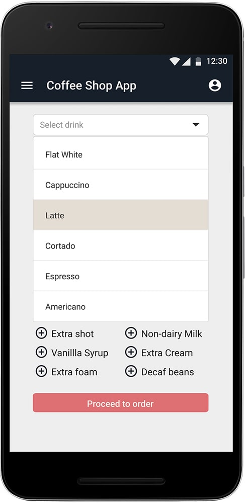
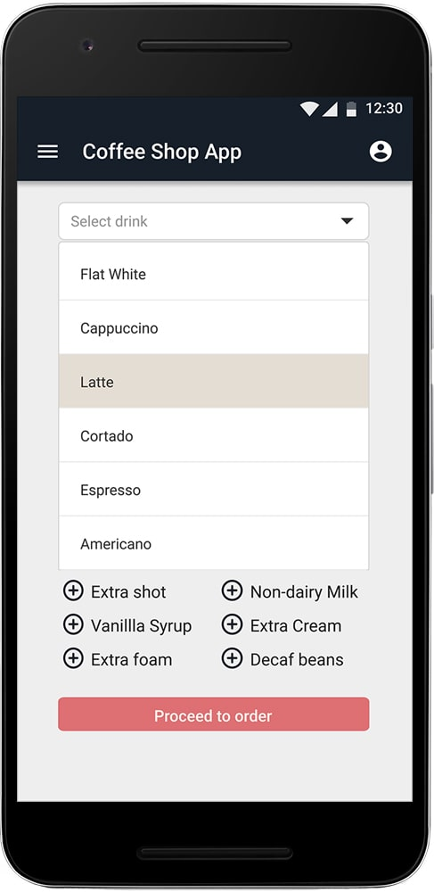
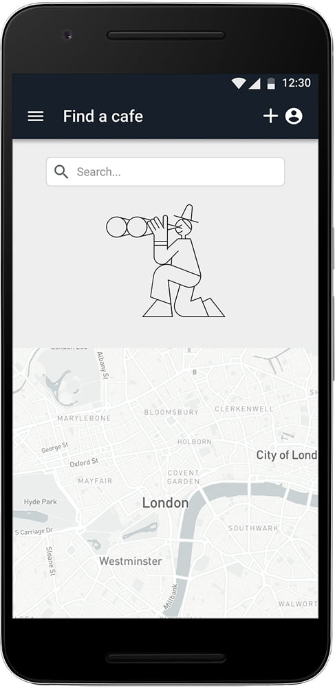
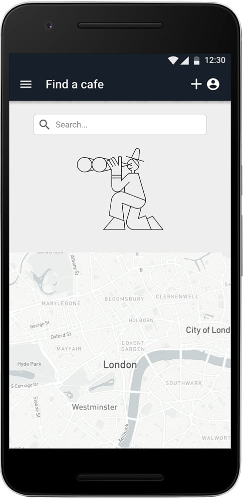

Coffee Order App
Mobile / UX / UI

intro
The purpose of this project is to help coffee enthusiasts discover their local cafes by providing information about location, recipes and prices. It makes ordering a coffee an enjoyable and efficient experience by offering recommended recipes
based on dietary preferences, wayfinding for a more efficient trip, and other important considerations such as price and quality.
Coffe Order is the main UX project completed within Udacity’s UX Nanodegree Program.
Objective: Create a genuine and effective coffee ordering experience for coffee enthusiasts
Role: Since it was a solo project I performed in all roles, from reseach to design to lo-fi and hi-fi prototyping
Duration: 1 month
Tools used: Figma, Miro, Zeplin, Adobe XD, Photoshop, Illustrator, Google Forms, Mobbin, Unbounce, LookBack
‍Final product showcase: Hi-Fi prototype and animations for mobile
problem
Professionals have local coffee shops that they can go to, yet many either don’t know about them or don’t have enough time to stop by and buy coffee.
solution
My app tries to resolve this problem in that it makes users aware of local cafes and enables them be efficient in ordering and having their preferred hot drinks.
To encourage users to consume local, I’ve introduced a reward-based system with each visit, in which user can get discounts on other
products or free drinks after a certain number of payments.

feature ideation and prioritization
I interviewed mulitple young professionals to determine what factors influence their decision to stop by their local coffee shop.
I found out that most users have limited time in the morning to get ready for work and prefer to have coffee on the go (for convenience)
or at work. Some other decision factors were the lack of variety of shops in their community and of dedication to look for new places.
Based on the notes taken during the interviews, I’ve come up with a feature prioritization diagram:

wireframing
Having analyzed users’ desires and the feature diagram, I began wireframing and came up with one simple app design, by using the ‘Crazy 8s’ technique:

The design present the user with a drink personalization screen where they can choose the type, size and extras for the drink.
After confirming the order and payment, the user can:
- navigate to their profile page
- see friends’ list
- watch a tutorial on how to make a type of coffee
- use the map screen to find a cafe nearby
Low fidelity prototypes designed in Miro can be seen here.
storyboarding
The storyboard illustrates how the user would complete the task in the app.

a/b testing
I tested my design with the users and found that:
- The process flow was clear, similar to the usual order process in the other coffee ordering apps (e.g. Costa)
- The interface looked really neat and pleasant
- The extra ingredients list would need better sorting (e.g. non dairy milk with several options)
- The app also needed an ETA after the order is complete, so can the user can plan their visit to the shop
prototype iteration
Based on the user testing insights, I need to re-organize the sorting system for the coffee ingredients in a way that makes better sense to the user and doesn’t waste his time by trying to figure out how to complete the task. Also by making modifying some UI elements , the app is more accessible and can reach a larger group of users. I improved the mobile experience by re-designing the order screen and sorting ingredients for quicker selection.

Design - Variant A

Design - Variant B
high-fidelity prototyping
This application is yet to be implemented.
Potential next steps would be to write the code for using Kotlin, text it within a small community and launch on Google App Store.
The full project created in Figma can be accessed here.
The prototype animation can be accessed through this link.
 



 
